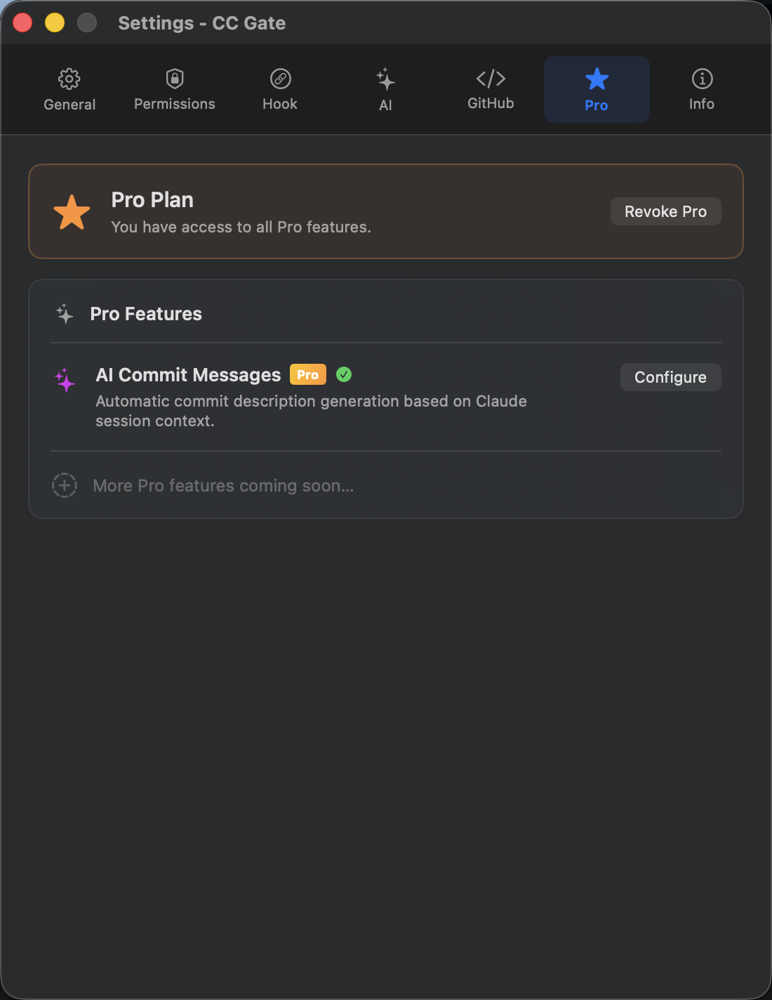
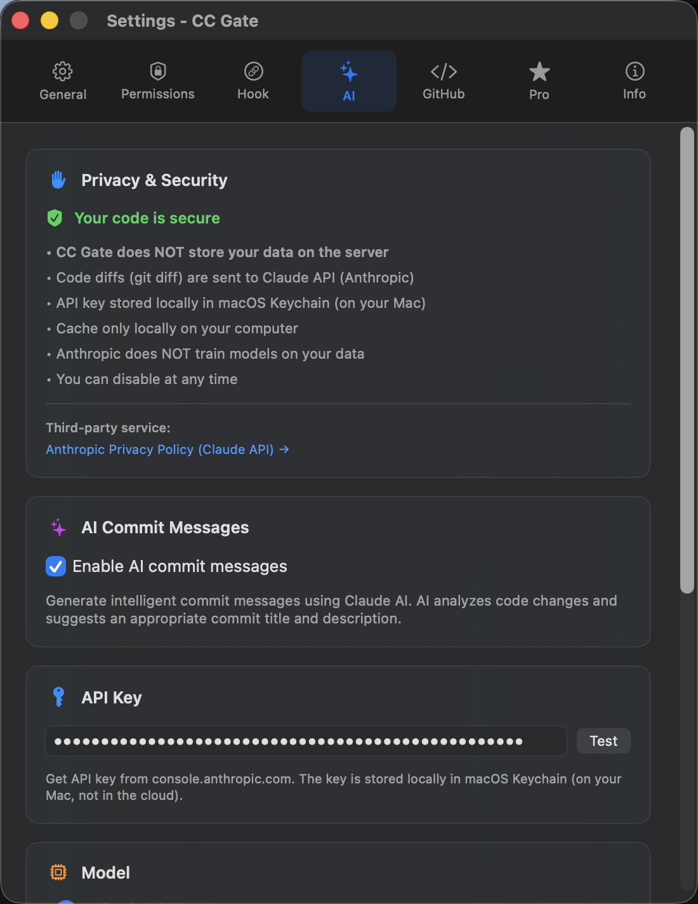

AI Commit Messages
After Claude Code finishes working on your project, CC Gate can automatically write a commit message that describes exactly what changed — based on what Claude actually did.
What you need
Three things need to be in place before AI Commits will work:
CC Gate Pro
AI Commits is a Pro feature. Activate your plan in Settings → Pro.
Anthropic API key
Get one at console.anthropic.com — free to start. Enter it in Settings → AI.
A recent Claude session
Claude must have worked on the project recently so CC Gate knows what changed.


How to use it
-
Open the commit panel
Right-click a worktree (or project) and choose Commit Changes...
-
Wait a moment
CC Gate analyzes what changed and what Claude was doing. This takes a few seconds.
-
Read the suggested message
A commit message appears automatically. It describes what Claude actually did — not just which files changed.
-
Edit if needed, then commit
The message is yours to change. When you're happy with it, click Commit.
If you want a different message, click Refine and add a note like "I was fixing the login bug" — CC Gate will adjust the message using your hint.
How it decides what to write
CC Gate looks at two things: the code that actually changed (the diff between your last commit and now) and what Claude Code was doing during the session. It only looks at the work done since your last commit — not older history.
For very large changes, it breaks the work into chunks, summarizes each one, and combines the results into a single message. You don't need to do anything differently for this to work.
Commit format
CC Gate uses a standard format called Conventional Commits: type(scope): description.
| Example | What it means |
|---|---|
feat(ui): add dark mode toggle |
A new feature in the UI |
fix(auth): handle expired tokens |
A bug fix in authentication |
refactor(api): simplify request handling |
Code cleanup with no behaviour change |
You can change the type and scope in the commit panel before clicking Commit.
If something goes wrong
"No session found"
Run Claude Code in the project first, then open the commit panel and try again. CC Gate needs to see recent Claude activity to generate a message.
API key error
Go to Settings → AI and click the Test button next to your key. If the test fails, the key may be invalid or out of credits. Get a new one at console.anthropic.com.
Message looks too generic
Add a note in the "What were you working on?" field and click Refine. A short description like "adding dark mode" gives CC Gate enough context to write a much more specific message.